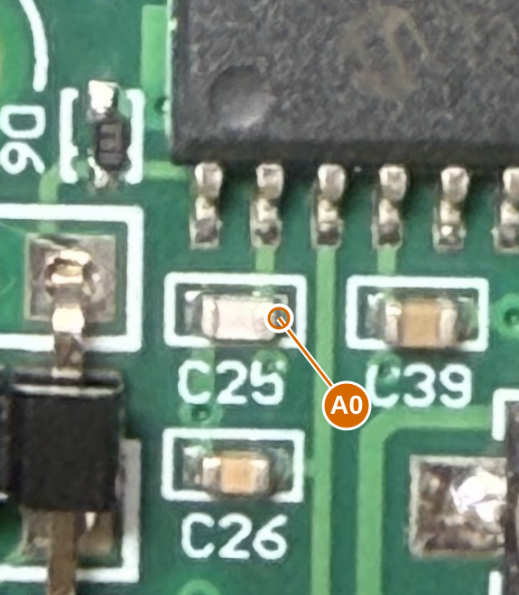
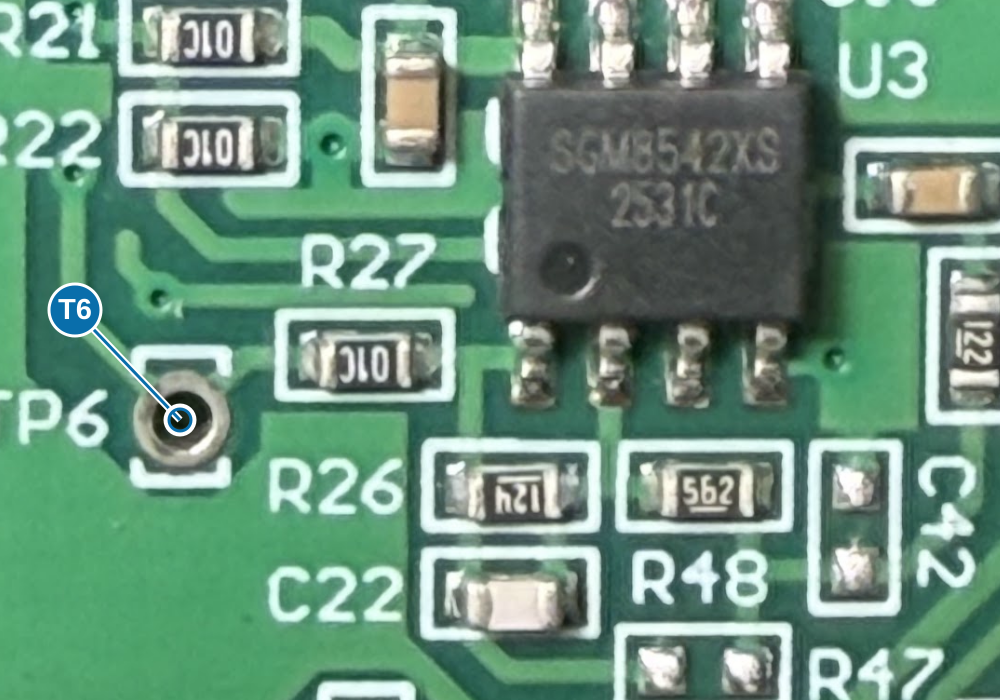

A0: C25 signal end at PIC pin 2 / RA0

- A0: Right metal end of C25, nearest C39; the upper capacitor above C26. Existing PIC pin 2 / RA0 / V031 node. Red probe here.
| ID | Red probe | Black probe | Condition | Reading |
|---|---|---|---|---|
| B59 | A0 | T6 | Unpowered |
v0.9.37 · 1 requested readings
BATTERY AND PROGRAMMER DISCONNECTED. Use resistance (ohms), not the powered voltage setup from the previous screen. Leave Q3 fitted. Measure between A0 and T6 below; neither probe goes to GND.
B59: red probe A0, the right metal end of C25 nearest C39 in the PIC photo; black probe T6, the plated TP6 hole beside R27 in the receiver photo. Report the resistance in ohms, kohms, or OL. If it changes, report the range. This is one reading across two photographs.

| ID | Red probe | Black probe | Condition | Reading |
|---|---|---|---|---|
| B59 | A0 | T6 | Unpowered |

Other probe location for the same reading above; no additional test.
Why this pair: C25/RA0/V031 and TP6/R27/V072 are two signal branches whose onward routes disappear internally. TP6 is connected through R27 to the first receiver amplifier output, making it a concrete candidate for the filtered PIC input. This is a hypothesis, not a claimed wire. A near-probe result supports one net; a kilohm reading indicates a component path and must not be treated as continuity. OL rejects only this pair, not every possible route.
Worksheet only; nothing is sent automatically. Copy before closing.
ERC: 1 retained U6/U6A output conflict. U6A is DNP; its regulator symbol remains by your request. Other source and library findings are resolved.